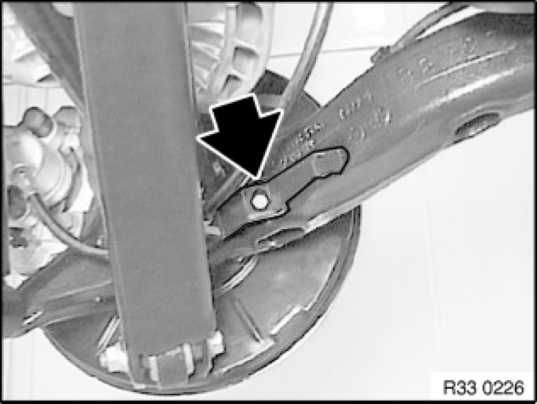

Removing and Installing Complete Rear Axle Carrier
33 31 000 - Removing and installing complete rear axle carrier

Special tools required:
- 33 4 420 33 4 420 Support

Warning!
Danger of injury!
Failure to comply with the following instructions may result in the vehicle slipping off the lifting platform and critically injuring other persons.
Read and observe the information on load distribution in the lifting platform operating instructions.
Before lowering/removing the rear axle carrier, it is essential to place a minimum load of 100 kg in the luggage compartment to prevent the vehicle from toppling/slipping off the lifting platform!
When supporting components, make sure that
- the vehicle can no longer be raised or lowered
- the vehicle does not lift off the locating plates on the lifting platform

Necessary preliminary tasks:
- Remove emergency wheel pan Service and Repair
- Remove propeller shaft Removing and Installing Propeller Shaft (Cardan Universal Joint) Completely from rear differential and tie back
- Disengage handbrake Bowden cables from handbrake lever Service and Repair and expose up to rear axle carrier
- Remove coil springs Removing and Installing/Replacing Rear Left or Right Coil Spring
- If necessary, disconnect plug connection from ride-height sensor
- Remove lip on both sides
- Disconnect plug connection for pulse generator on both sides
- Disconnect plug connection for right brake pad wear sensor.

Important!
Risk of damage!
Brake hose must not be exposed to tensile loads.
Release screw and remove bracket with brake hose.
Tightening torque 34 32 3AZ 34 32 Brake Lines.

Disconnect plug connection for right brake pad wear sensor on brake caliper.
Remove brake caliper on both sides of trailing arm Removing and Installing/Replacing Left or Right Rear Brake Caliper and tie back.
Remove lower control arm on both sides from trailing arm.
Slide brake caliper through between output shaft and lower control arm and tie up.
Remove bearing block for trailing arm from body Replacing Bearing Block for Front Trailing Arm.

Support rear differential with workshop jack and special tool 33 4 420 33 4 420 Support.
Important!
Observe gap between special tool 33 4 420 33 4 420 Support and dust plates (1).
To avoid grinding noises, make sure the dust plates (1) are not damaged (e.g. bent).
Remove tension strut Removing and Installing/Replacing Compression Strut for Rear Axle Carrier.
Release screws (1) and remove stop plate.
Lower rear axle carrier.
Installation Note:
Check threads for damage; if necessary, repair with Helicoil thread inserts Notes on Repairing Threads.
Tightening torque 33 33 3AZ Rear Axle Suspension.
After installation:
- Adjust handbrake Adjustments
- Perform chassis alignment check